4.4.Estimation with Uncertainty
Confidence Intervals
2025-11-03
Key points for today
Error bars
-
Confidence intervals
- definition
- how to interpret
- how to calculate CI of the mean (approximation and bootstrap)
Pseudoreplication
Recap
Estimate the standard error of the mean for a sample of size \(n=16\) that has \(s=25\):
Recap
Estimate the standard error of the mean for a sample of size \(n=16\) that has \(s=25\):
\(SEM=\frac{s}{\sqrt{n}}=\frac{25}{\sqrt{16}}=6.25\)
Recap
| Statistic | Parameter (population) | Point estimate (sample) |
|---|---|---|
| Mean | \(\mu\) | \(\bar x, \bar y, \bar X\), etc |
| Proportion | \(p\) | \(\hat{p}\) |
| Standard deviation | \(\sigma\) | \(s\) |
- Your parameter is constant (usually denoted by a greek letter)
- A point estimate is any single number that is calculated from a “parameter space” and serves as your “best guess” or “best estimate” of an unknown population parameter
Standard Error - Key points
- A standard error is just the standard deviation of a statistic
- We use “standard error” to talk about the distribution of a statistic, whereas “standard deviation” is usually used to talk about the distribution of data itself (either the whole population or a sample)
Error Bars
Error bars
What are they?
Lines that extend from a point estimate to reflect the degree of uncertainty of the parameter being estimated
We’ve seen them several times in this lecture!
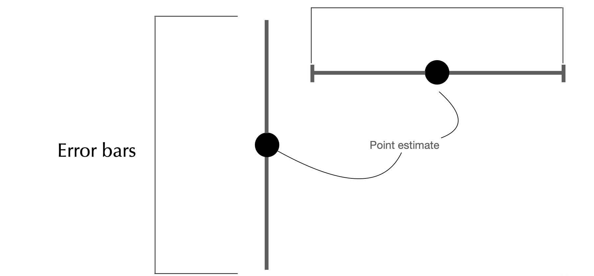
What do they measure?
Unfortunately, it depends on what one wants to convey:
- Confidence intervals
- 1 Standard error
- 2 Standard errors
- etc
Only use error bars to convey uncertainty, not spread!
Disclaimer: this is a general statistical principle and for this course we will abide to it. Standard deviation is a measure of spread/variability, not of uncertainty. It is possible that you learn elsewhere that in a specific field this is tolerated more than others.
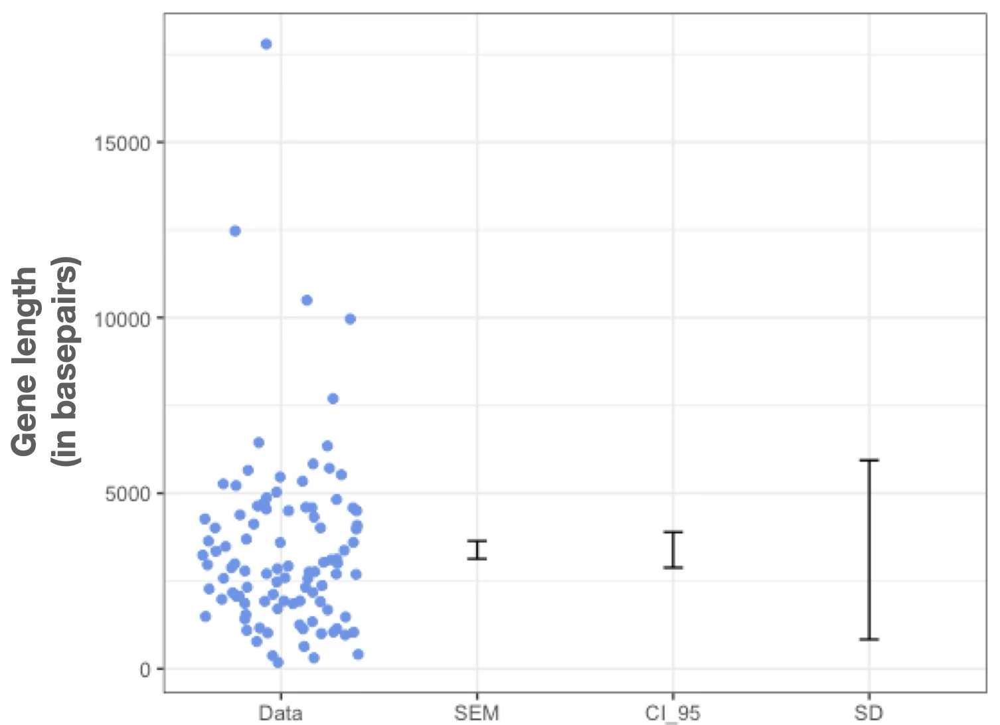
If goal is to show variation among data
If =< 100 data points: just plot it all in a strip chart (remember to add jitter and transparency)
Otherwise, to avoid clutter: violin plot, CFD, boxplot
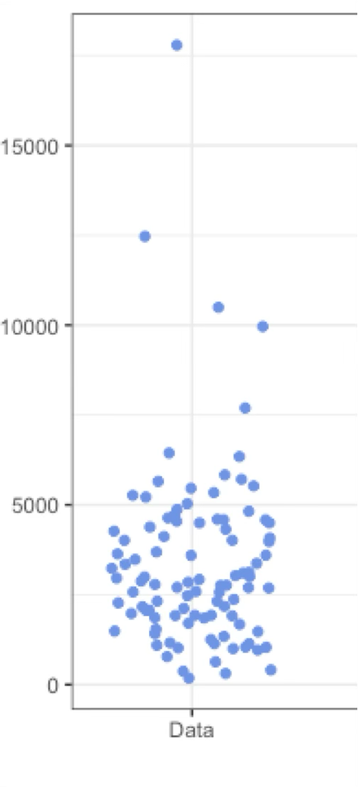
If goal to show how precisely you have estimated a parameter
Use CI (easier to interpret, wider) or SEM (narrower, harder to interpret) to compare:
- two or more means
- your estimate vs. model predictions
Example: showing that the second plague (Yersinia pestis) pandemic shaped the gene pool of certain populations
{kind=link}
ERROR BARS- CAUTIONARY TALES
Mistake 1: assuming distributions are Gaussian (bell-shaped)
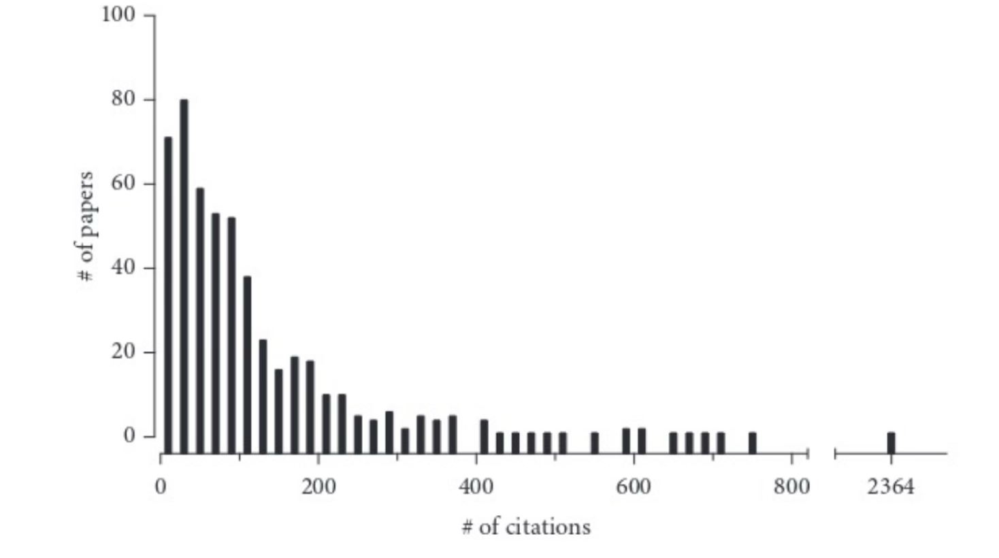
A very asymmetrical distribution. Remade from Colquhoun (2003). The number of citations (X-axis) received (within five years of publication) by 500 papers randomly chosen from the journal Nature. The bin width is 20 citations. The first bar shows that 74 papers received between zero and 20 citations, the second bar shows that 80 papers received between 21 and 40 citations, and so on. Example from: Intuitive Biostatistics
Mistake 1: assuming distributions are Gaussian (bell-shaped)
If you were only told the mean and SD here are 101 and 43 or only saw plot A), below, you would imagine something like B, but C or D have these same summaries!
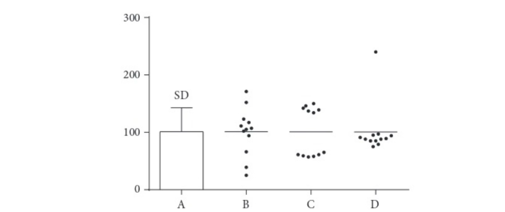
The mean and SD can be misleading. All four data sets in the graph have approximately the same mean (101) and SD (43). If you were only told those two values or only saw the bar graph (A), you’d probably imagine that the data look like Data set B. Data sets C and D have very different distributions, but the same mean, SD, and SEM as Data set B. Example from: Intuitive Biostatistics
Mistake 2: Plotting mean and error bars without defining how bars were computed
How will your reader know if it’s the SD, SEM, CI, range, or something else?
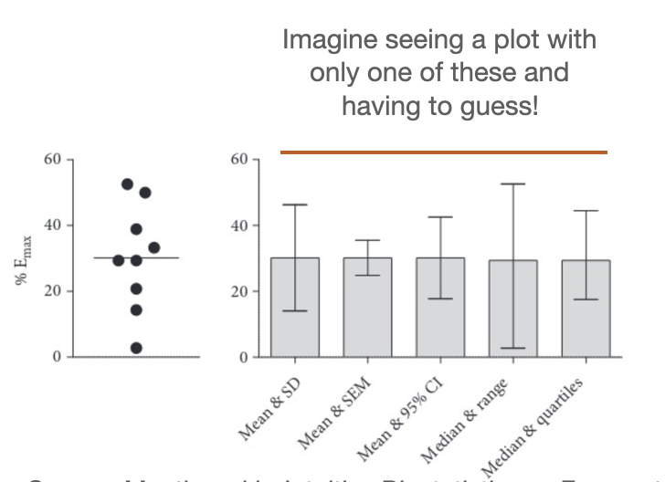
Source: Mentioned in Intuitive Biostatistics as Frazer et al. (2006), a study of the bladder-relaxing effects of norepinephrine in old rats.
Confidence Interval: a plausible range for a parameter
Interval Estimation
Loosely, attempt to define a range of numbers that might include the parameter of interest
Also a way of quantifying uncertainty
Confidence Interval (CI): Definition
A “1 − 𝛼” confidence interval is an interval \((v_1, v_2)\), where \(v_1\) and \(v_2\) are instances of random variables satisfying \[𝑃(v_1 < \theta < v_2) \geq 1 − 𝛼\]
if \(\alpha=0.05\), we have a \(95\%\) CI.
if \(\alpha=0.01\), we have a \(99\%\) CI.
95% and 99% are difference confidence levels
, etc …
CIs define “plausible” parameter values
CI width
Different samples can have different CIs
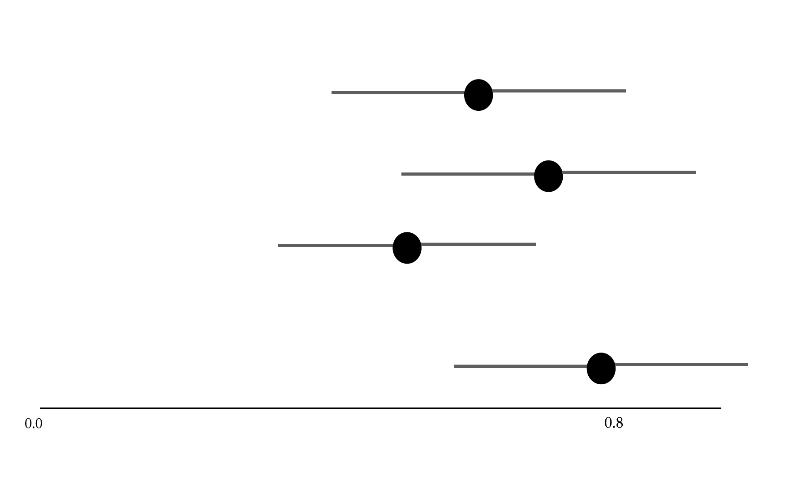
In summary: why does the CI vary?
- Sample size: all other things being equal, bigger \(n\) means lower CI
- Confidence level: 0.90 gives narrower range than 0.95 In the long run, ~95% of 95% CIs estimated from random samples will include the population parameter of interest!
- Random sampling: just like point estimates such as the mean, are prone to the randomness of a given sample
CI notation
E.g. for a confidence interval encompassing from values 0.1 to 0.5 (inclusive)
Preferable:
Using the parameter (e.g. if we’re estimating the mean): \(0.1<\mu<0.5\)
\(\left[0.1,0.5\right]\)
\(0.3\pm 0.2\)
Fine:
0.1 to 0.5
Do not use: 0.1-0.5 or 0.1–0.5
Why? This can be confusing for negative numbers
Interpreting CIs
Interpreting CIs
✅ Correct ✅
~95% of 95% confidence intervals calculated from samples include the population mean.
We are 95% confident that the population mean lies within the 95% confidence interval.
😔 Incorrect
- There’s a 95% probability that the population mean is within the 95% confidence interval.
Why? The CI either contains the parameter or it does not contain it. The probability is associated with the process that generated the interval. And if we repeat this process many times, 95% of all intervals should in fact contain the true value of the parameter.
CIs for any parameter
- CIs can be calculated for means, proportions, correlations, differences between means, regression lines, and much more …
- We won’t learn yet how to calculate this, but rather focus on how to interpret CIs.
CI and sample sizes
The width of the CI is approximately proportional to the reciprocal of the square root of the sample size
\[CI\propto \frac{1}{\sqrt{n}}\]
- Translating: to reduce your CI by a factor of 2, you need to increase your sample size by a factor of 4; to reduce the CI by a factor of 10, you would need to increase your sample size by a factor of 100!
How do we calculate CIs?
Two ways, mainly:
- If certain assumptions are met (more on this soon), we will learn in a few weeks how to do it
For all other cases:
- Simulations! (resampling)
The 2SE Rule of Thumb for the 95% CI of the mean
Assumptions
If and only if:
- Sample is random, accurate, and composed of independent observations
- Population variable of interest is distributed in a Gaussian/Normal manner (at least approximately)
- Population standard deviation for the variable of interest is known (or we have a decent sample estimate), but population mean is unknown.
THEN …
The 2SE Rule of Thumb for the 95% CI of the mean
If assumptions are met, then…
a rough estimate of the 95% CI for the mean is:
Lower 95% CI: \(\bar X - 2\times SEM_{\bar X}\)
Upper 95% CI: \(\bar X + 2\times SEM_{\bar X}\)
EXAMPLE: HUMAN GENE LENGTHS
Example
100 replicate of \(n=5\) genes samples from all human genes
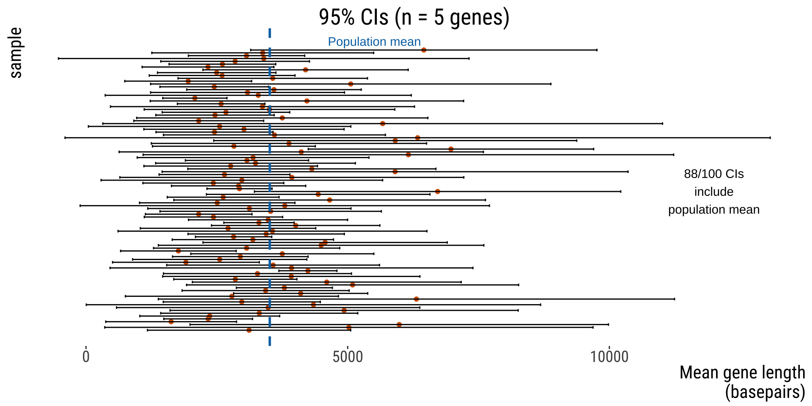
Example
Another 100 replicates of n=5
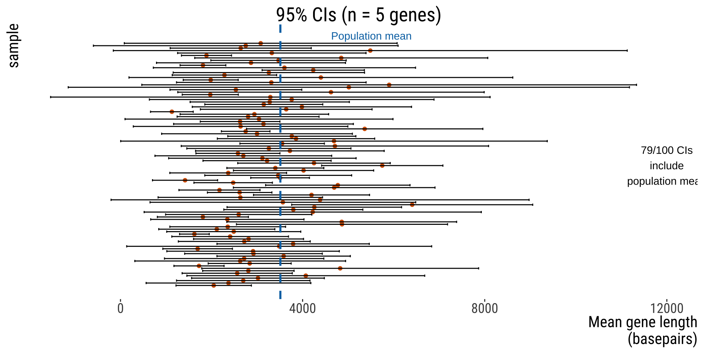
Larger sample size narrows CI
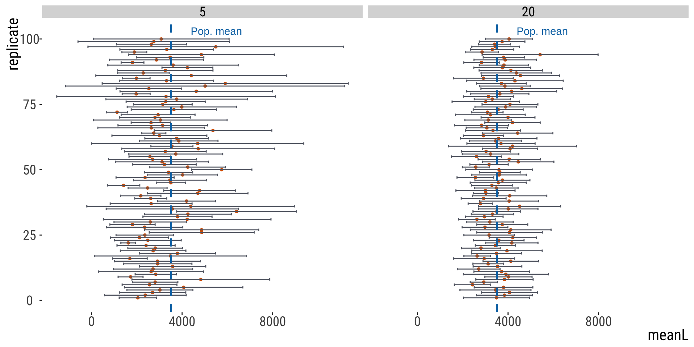
Larger sample size narrows CI
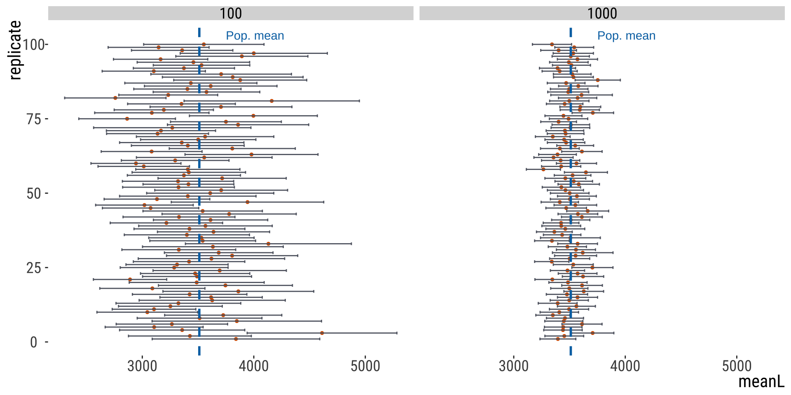
Larger sample size narrows CI
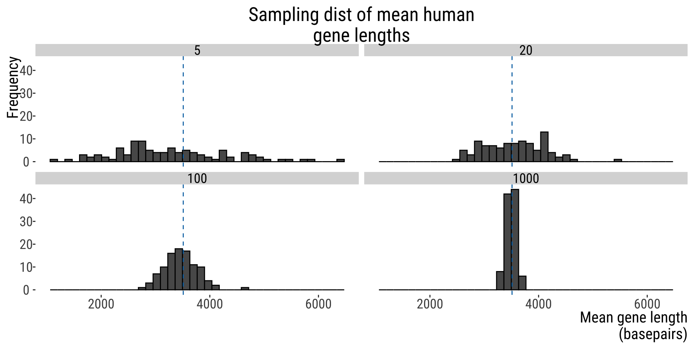
That’s all for today

From: makeameme.org
B215: Biostatistics with R